You must be asking yourself what the hell we are talking about. The is what the heading is to the T. Since 2020 Pharmaceutical, Finance & Energy have seen more than steady growth. This would make practical sense in the everyday world as we NEED Meds, Banking and Electricity. The Pharmaceutical, Finance and Energy industries hold a lot of our bias as they continuously pursuit and get government contracts, funding and in most cases bail-outs.
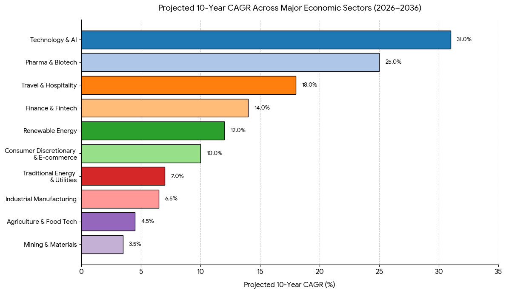
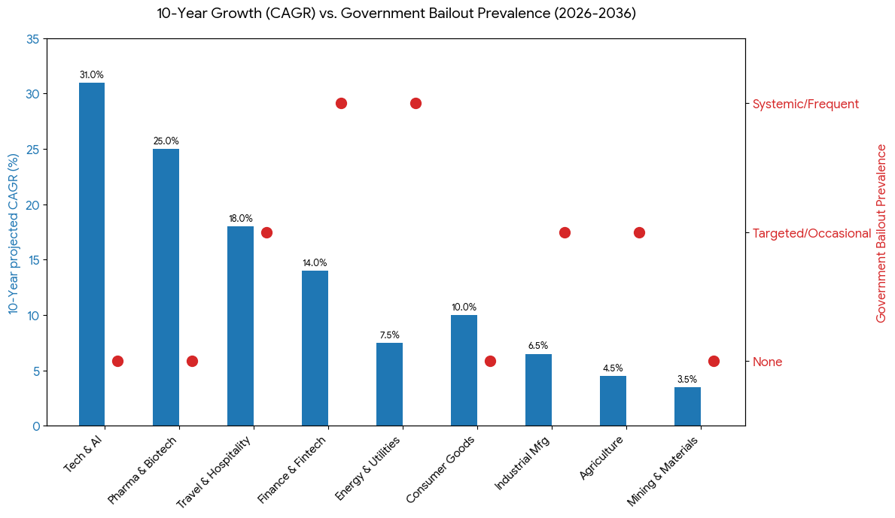
We also cannot escape the massive energy demands the are imposed by Datacenters in addition to the already expanding demands of civilization.
Although this is good news, knowing this is only one piece of the puzzle as you also have to know which companies within these industries are game changers. Here is a list of our trusted names.
Pharmaceuticals & Biotech
Abbott Labs
This one right here should be "OG". If you ever been to a hospital then you most probably have used or seen of this company's product. They manufacture medical devices and equipment, they also have nutritional products. The FDA just authorized their dual glucose-ketone sensing biowearable technology designed to continuously track glucose and alert users of rising ketones in diabetic patients //www.reuters.com/business/healthcare-pharmaceuticals/fda-authorizes-abbotts-wearable-monitor-ketone-glucose-diabetes-patients-2026-08-25/)
Schrodinger Inc.
This one is also a game-changer. it is an international scientific software and biotechnology company that specializes in developing computational tools and software for drug discovery and materials science. This is companies leverages dominance in 2 major industries(Tech and pharma) to develop seamless solutions that make developing meds and diagnosis/treatment very quick.
Clinuvel Pharmaceuticals
The Mrs. probably has one of their products somewhere in the house. We categorised this company as simply a Dermatological product manufacturer until we dove deep into why it is pushing such number and we found out that its not the only thing they do. Clinuvel Pharma. is also into Photo Medicine which a medical field that studies the use of light to treat diseases.
Biostem Technologies Inc.
This one is pretty under-valued IMO, they offer advanced Surgical Care and advanced Wound Care products that accelerate the healing process.
Finance
JP Morgan Chase & Co.
This is apparently the world's fifth-largest bank by total assets, with $4 trillion in assets as of 2026. ranked #1 in the Forbes Global 2000 ranking. This is basically a bank as you will see with most of the names that will follow it.
VISA
This one should be a no brainer guys. In addition to their already dominating services; they continue locking forces with newer payment platforms and methods. They allegedly are working on a blockchain/ledger system which will definitely mean they will have their own crypto platform rather than participating to the current exiting systems by just minting another sht coin.
Goldman Sachs Group Inc
This is one of the largest private equity firms. Managing their own and client assets simultaneously while also growing their financial reach throughout the globe. Their risk appetite is very huge so expectedly the stock dumps when it does and fckn PUUUUMPS when it pumps. We have a split bias whether it is overpriced or not, be that as it may; this is definitely one of the best HODLs.
Bank Of America
Now this one is what would be known as a traditional bank and it being so is providing a large number of americans and their businesses with financial services. This one basically does the same as all the above mentioned and more.
Citi Group
Basically the same setup as Bank of America.
Lyntrix
More of a B2B company providing financial advice and services to various clients, focuses largely on business expansion. We have suspicions that it also does "business-in-a-box" type of setups for their clients
Jefferies Financial Group Inc
Another multinational independent investment bank and financial services company. The firm provides clients with capital markets and financial advisory services, institutional brokerage, securities research, wealth management and asset management. We thought it to be more private equity at first until we discovered that it does "Banking" and asset management for the some of thee biggest names in the business game.
Evercore Partners Inc
Another "private equity" type investment banking firm, also has top tier clients trusting them with huge amounts of "assets". Check out who founded this and see if the names dont ring any bells.
Lazard Ltd
Another multinational financial advisory and asset management firm founded in 1848 and has a huge Wall Street holding consensus.
Moelis & Co.
Global independent investment bank providing innovative, unconflicted, and strategic advice to help clients achieve their objectives.
Houlihan Lokey Inc
A multinational independent investment bank and financial services company and the No. 1 ranked global M&A advisor by transaction count.
Stifel Financial Corporation
Offers securities-related financial services in the United States and Europe through several wholly owned subsidiaries.
Raymond James Financial Inc
American multinational independent investment bank and financial services company providing financial services to individuals, corporations, and municipalities through its subsidiary companies that engage primarily in investment and financial planning, in addition to investment banking and asset management.
Energy
Oklo Inc
Oklo Inc. is a publicly traded American nuclear power company based in Santa Clara, California. The company develops a small modular nuclear reactor, the Aurora Powerhouse, and intends to sell both electricity and radioisotopes produced by their Aurora reactors.
Eaton Corporation PLC
Eaton Corporation plc is an American multinational power management company, with a primary administrative center in Beachwood, Ohio
Quanta Services
Quanta Services is a U.S. corporation that provides infrastructure services for the electric power, pipeline, industrial and communications industries. In the 2020s, it has been involved in the construction of data centers as a consequence of the rise of artificial intelligence and its need for electrical power.
Quanta Services
Quanta Services is a U.S. corporation that provides infrastructure services for the electric power, pipeline, industrial and communications industries. In the 2020s, it has been involved in the construction of data centers as a consequence of the rise of artificial intelligence and its need for electrical power.
Hubbell Inc
Hubbell Incorporated, headquartered in Shelton, Connecticut, is an American company that designs, manufactures, and sells electrical and electronic products for non-residential and residential construction, industrial, and utility applications.
nVent Electric PLC
nVent Electric plc is an American-British multinational company that designs, manufactures, and services electrical connection and enclosure products. The company builds equipment enclosures, cooling systems for data centers, power distribution units, and electrical fastening systems. Its hardware safeguards sensitive electronics and power infrastructure for industrial, commercial, and energy projects
Emerson Electric Co.
Emerson Electric Co. is an American multinational corporation headquartered in St. Louis, Missouri, that specializes in industrial automation, software, and control systems.
MYR Group Inc
MYR Group Inc. is an American corporation that offers electrical construction services for transmission and distribution lines, substations, commercial and industrial buildings, and renewable energy. It is the parent company to 12 subsidiary electrical construction companies.
Constellation Energy Corp
Constellation Energy Corporation is an American energy company headquartered in Baltimore, Maryland. The company provides electric power, natural gas, and energy management services. It has approximately two million customers across the continental United States.
Vistra Corp.
Vistra Corp. is an integrated retail electricity and power generation company based in Irving, Texas. The company is the largest competitive power generator in the U.S. with a capacity of approximately 39GW powered by a diverse portfolio, including natural gas, coal, nuclear, solar, and battery energy storage facilities.
Nextera Energy Inc
NextEra Energy, Inc. is an American energy company that is the world's largest electric utility holding company by market capitalization, with a valuation of over $187 billion as of July 2026.
Duke Energy Corporation
Duke Energy Corporation is an American electric power and natural gas holding company headquartered in Charlotte, North Carolina. The company serves over 7 million customers in the eastern United States.
Southern Company
Southern Company is an American gas and electric utility holding company based in the Southern United States. It is headquartered in Atlanta, Georgia, with executive offices located in Birmingham, Alabama. As of 2021 it is the second largest utility company in the U.S. in terms of customer base.
Dominion Energy Inc
Is an American energy company headquartered in Richmond, Virginia that supplies electricity in parts of Virginia, North Carolina, and South Carolina and supplies natural gas to parts of Utah, Idaho and Wyoming, West Virginia, Ohio, Pennsylvania, North Carolina, South Carolina, and Georgia. Dominion also has generation facilities in Indiana, Illinois, Connecticut, and Rhode Island. The company acquired Questar Corporation in the Western United States, including parts of Utah and Wyoming, in September 2016. In January 2019, Dominion Energy completed its acquisition of SCANA Corporation.
National Grid PLC ADR
National Grid plc is a British multinational electricity and gas utility company headquartered in London, England. Its principal activities are in Great Britain, where it owns and operates electricity and natural gas transmission networks, and in the Northeastern United States, where as well as operating transmission networks, the company produces and supplies electricity and gas, providing both to customers in New York and Massachusetts
Why they will BOOM
As mentioned above; all of these industries are essential to us and to machinery, in some instances these industries feed each other directly and/or indirectly. That being said, these stocks have seen cyclical Ups and almost predictable lows. Also, one way of analyzing a potential market mover in books is by dividing the stock price by the dividend(Price-to-Dividend ratio (often called the dividend multiple)), if the answer is >200% from the stock price then it means that stock is definitely over-valued IOO. You will see a lot of this calculation being used below. Although some of these companies do not offer dividends, we try and figure out how much would be offered, we use a process called hypothetical dividend modeling. Which basically looks at said company's Earning Per Share(EPS), compare it to benchmark competitors to get the target payout ratio and then work your way from there. Let us illustrate:
Pharmaceuticals & Biotech
Abbott Laboratories
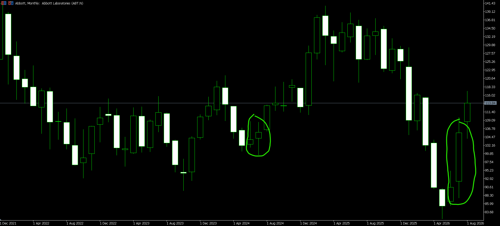
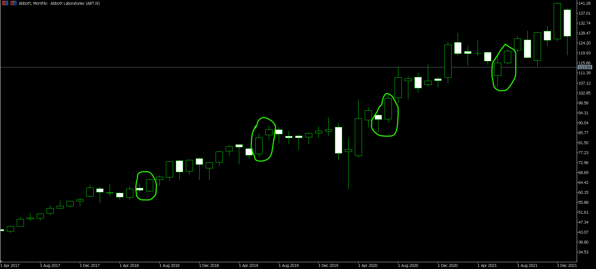
As you can see above; for the past 6 years, Abbott has seen $10+ gains during June-July cycle with 2 reversals recorded during the same time period around the same cycle as shown below;
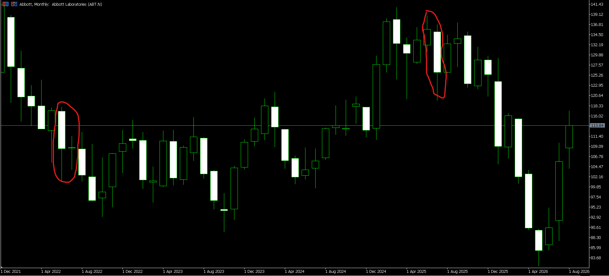
With the share price at $114.10, its sitting at 2021 June levels which still indicates a perfect time to buy and HODL for the next June-July Abbott Cycle.
Stock price: $114.10
Dividend: $0.63
Dividend Multiple: 158.73%
Biostem Technologies Inc.
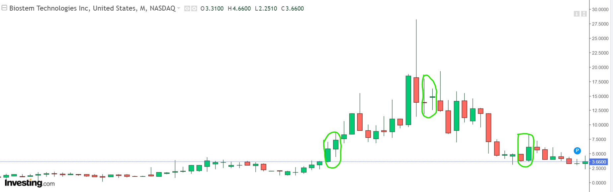
As you can see, this company also has cycles where it sees massive gains and you can pin-point them being towards the end and beginning of the year(December-January). We are yet to see a reversal of this cycle since 2022. It is also good to note that prices are sitting at 2023 resistance levels, will this price be the new support or can it go lower?
Stock Price: $3.81
Dividend: Does not offer dividends
Dividend Multiple: N/A
Finance
JP Morgan
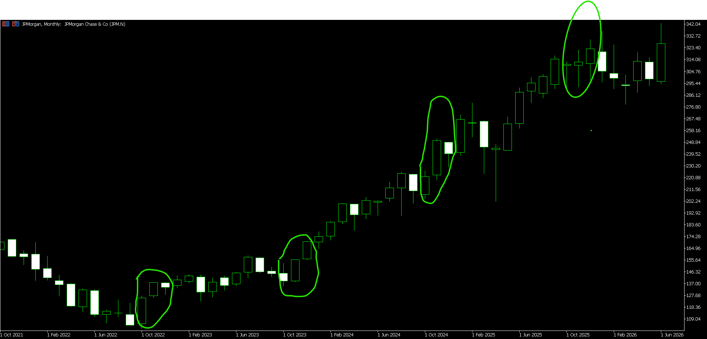
Here you can see we have a clear October-December cycle which has not seen any reversals since 2022.
Stock Price: $356.50
Dividend: $1.50
Dividend Multiple: 66.67%
Goldman Sachs Group Inc
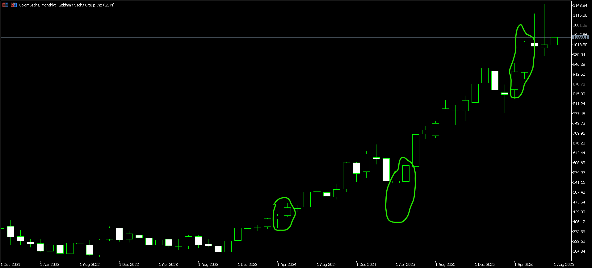
This April-May cycle seemed to start around 2023-2024, fairly new so take this with a huge grain of salt till it does like a 4-5 year run to confirm it to be a solid cycle.
Stock Price: $1039.01
Dividend: $20
Dividend Multiple: 51.95%
Bank of America
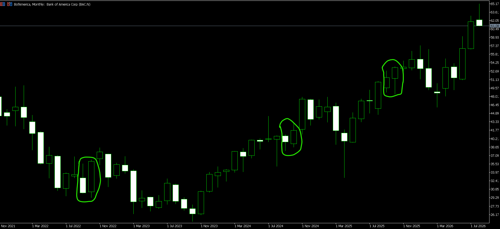
Clear September-October cycle can be seen here, further research has pointed us to a 7 year cycle of the same trend BC(Before COVID) but it picked up almost immediately in 2022 with only 1 reversal of the trend in 2023.
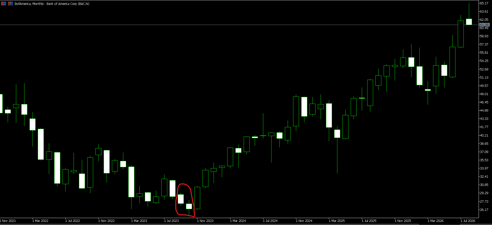
Keep this on your radar.
Stock Price: $61.08
Dividend: $1.28
Dividend Multiple: 78.12%
Citi Group
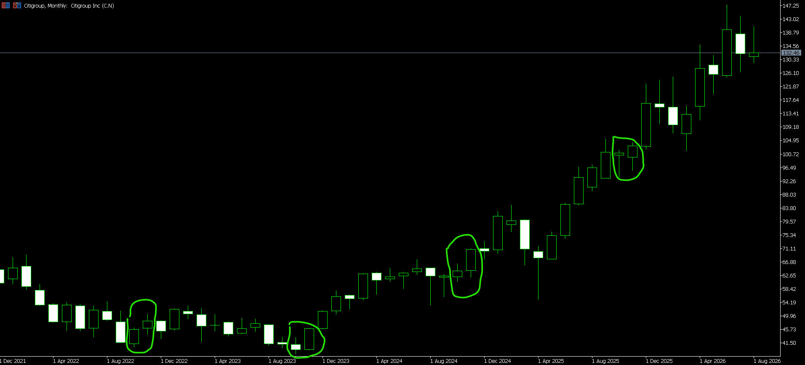
This one tries to overlap Bank of America but has a clear October-November Cycle which in rare instances crosses over to December. Has not seen any reversal to this trend for at least 5 years.
Stock Price: $132.46
Dividend: $2.68
Dividend Multiple: 37.31%
Jefferies Financial Group Inc
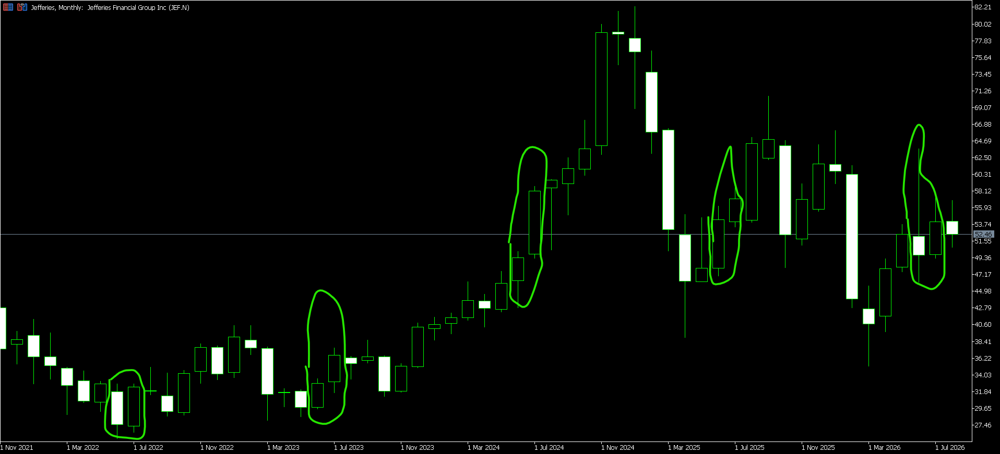
Another 5 year June-July cycle. This one is very solid and if you can grab it would be a win fr. Currently sitting at 2024-2025 levels from an ATH of $82, could that ATH be the new support moving forward to 2027 cycle?
Stock Price: $52.46
Dividend: $1.60
Dividend multiple: 62.5%
Raymond James Financial Inc
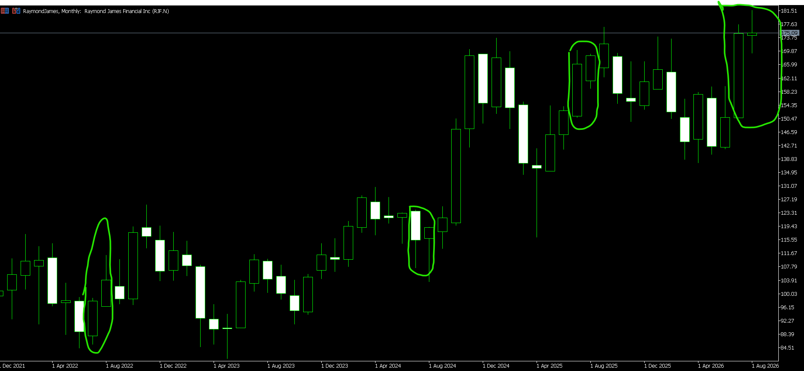
A clear July-August cycle can be seen here with one reversal in between to break the 4 year trend
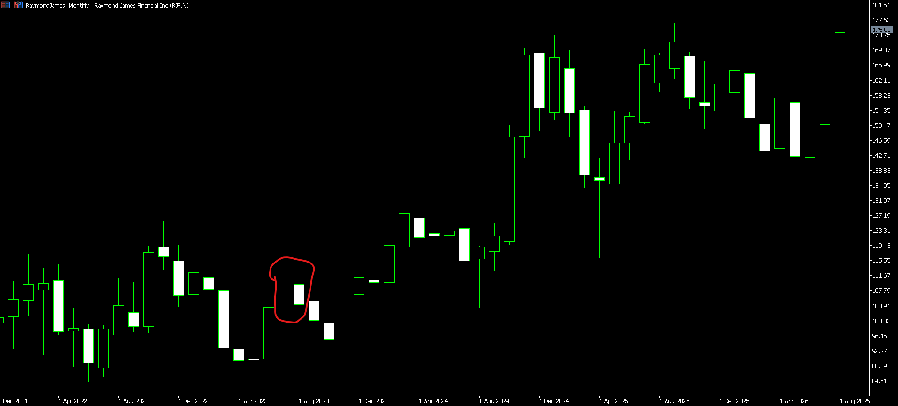
We believe we are experiencing the cycle in play rn, it looks like the August price might close on July highs which is still a good confirmation for our July-August cycle theory. Stay tuned
Stock Price: $175.09
Dividend: $2.16
Dividend Multiple: 46.29%
Energy
We are still analyzing this industry as well as it specified cycles as well as the names associated with it. We will issue vol.2 of this report when we reach a reasonable conclusion.
That was a mouth full. Albeit, we are not saying these patterns/trends will continue indefinitely as we have shown in instances of reversals. However staying true to the article title; that would only indicate an opportunity to double down and grab some more. Though if you take a closer look; there seems to be certain times in a year that these industries use as "cash grab" opportunities.
Pharmaceutical/Biotech
Based on the historical price action observed across the companies analysed, there appears to be a recurring seasonal pattern within the Pharmaceuticals & Biotech sector, with two periods standing out as particularly noteworthy: June–July and November–anuary.
Primary Seasonal Cycle: June–July
The June–July period appears to be the strongest recurring seasonal window identified in the analysis. Historical price movements, particularly in Abbott Laboratories, show repeated instances of significant upward momentum during this period. Across the historical charts examined, Abbott has experienced multiple $10+ advances around the June–July period, although there have also been instances where the cycle resulted in a reversal. This suggests that while the seasonal tendency can provide a useful indication of when bullish momentum may emerge, it should not be treated as a guaranteed outcome.
The consistency of this pattern makes June and July the primary months to monitor for potential accumulation and upward momentum within pharmaceutical and biotech stocks.
Secondary Seasonal Cycle: November–January
A second seasonal window appears to develop toward the end and beginning of the calendar year, particularly between November and January.
The historical price action observed in BioStem Technologies provides an example of this pattern, with significant price movements occurring around the December–January period. This suggests that certain pharmaceutical and biotech companies may experience a secondary period of increased price momentum during the final months of the year and into January.
Finance
The most interesting finding is the concentration of seasonal cycles toward the second half of the year. Rather than one single sector-wide cycle, the stocks appear to form a sequence:
June–July → July–August → September–October → October–November → October–December
This potentially creates an extended mid-year to year-end financial-sector seasonal window, with different financial institutions reaching their historically favourable periods at different points. Based on the companies analysed, June–July appears particularly significant for Jefferies, July–August for Raymond James, September–October for Bank of America, and October–December for JPMorgan and Citigroup.
Therefore, June through December may represent the most important period of the year to monitor within the financial stocks analysed, with particular attention paid to the individual seasonal windows of each company.
Consensus
The case for treating Pharmaceuticals & Biotech, Finance, and Energy as permanent HODL sectors rests on something simpler than charts or seasonal windows: these industries supply what civilization cannot function without—medicines and diagnostics, capital allocation and payments infrastructure, and the electricity that powers everything from hospitals to the exploding data-center footprint. Government contracts, funding, and occasional backstops only reinforce that structural demand.
None of this is a prediction that every name will rise in a straight line. Markets reprice, cycles break, and valuation metrics (including the dividend multiples shown) can look stretched or cheap depending on the day. What does not change is the underlying need for the products and services these companies deliver. For investors willing to ignore short-term noise and treat ownership as a multi-year commitment, the industries and the specific names inside them remain among the clearest candidates for a permanent core. This is not Financial Advice.